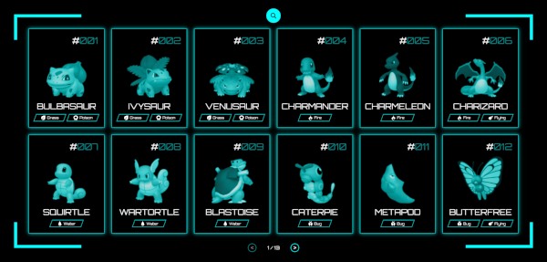
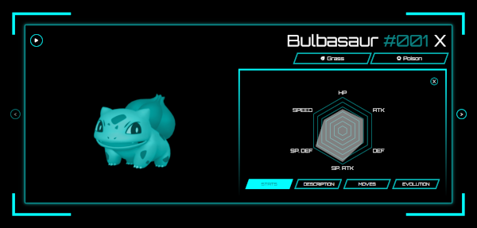

A simple and interactive Pokedex web application built with Angular. The Pokedex app allows users to search for Pokémon, view detailed information about each one, including evolutions, stats, and more.
Check out the live demo: Pokedex Live Demo
 Homepage with a list of Pokémon
 Detail page of a selected Pokémon with evolution and stats
Follow these instructions to get the project up and running on your local machine.
Make sure you have the following installed:
Clone the repository:
Example :git clone https://github.com/marcel-schmidt-dev/pokedex-app.gitNavigate to the project directory:
Example :cd pokedex-appInstall dependencies:
Example :npm installRun the development server:
Example :ng serveOpen your browser and navigate to http://localhost:4200/.
Once the app is running, you can:
Here's a brief overview of the project's folder structure:
Example :src/
│
├── app/
│ ├── components/ # Contains all reusable components like PokemonList, PokemonDetail, etc.
│ ├── services/ # Services for fetching data from the Pokémon API.
│ ├── app.component.ts # Main component of the application.
│ ├── app.module.ts # Application module.
│
├── assets/ # Static assets like images.
├── environments/ # Environment-specific configurations.
├── styles.scss # Global styles for the application.
└── index.html # Entry point for the application.Contributions are welcome! Here's how you can get involved:
Fork the repository.
Create a new branch for your feature or bugfix:
Example :git checkout -b feature/your-feature-nameMake your changes and commit them:
Example :git commit -m 'Add new feature'Push your changes to your fork:
Example :git push origin feature/your-feature-nameSubmit a pull request to the main branch of the original repository.
This project is licensed under the MIT License. See the LICENSE file for details.
If you have any questions or issues, feel free to contact us: